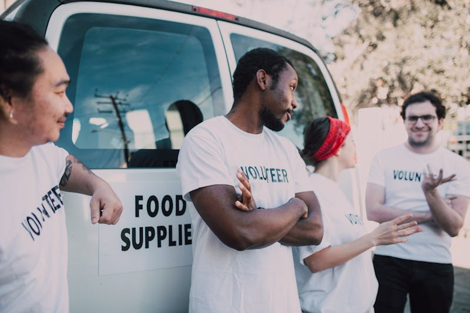
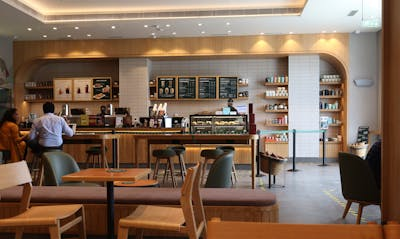
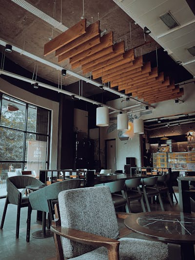

About Community Chest
Mobilizing Communities, Building Capacity Since 1928
Our History
Founded in 1928, Community Chest of the Western Cape began as a community fund in Cape Town, mobilising resources from business and individuals to support local charities.
Over nearly a century, we have evolved from a simple fund-raising organisation into a comprehensive development partner, providing grants, training, and strategic partnerships to NGOs across South Africa.
Today, we fund hundreds of projects annually, supporting organisations working in health, education, community development, and income generation. Our commitment to building the capacity of civil society remains at the heart of everything we do.

Our Mission & Vision
Mission
To improve lives by mobilising communities, business, and government to advance the common good through grants, training, and partnerships.
Vision
A South Africa where all people have the opportunity to participate fully in community life and access the resources they need to thrive.
Our Values
Integrity
We act with honesty and transparency in all our dealings.
Collaboration
We work in partnership with NGOs, business, and government.
Excellence
We strive for the highest standards in our work.
Respect
We value the dignity and diversity of all people.
Leadership
Our organization is governed by a dedicated board of directors and led by an experienced management team.

Board of Directors
Our board provides strategic guidance and ensures good governance.

Management Team
Our executives lead the day-to-day operations and programmes.
Get Involved
Join us in building stronger communities across South Africa.